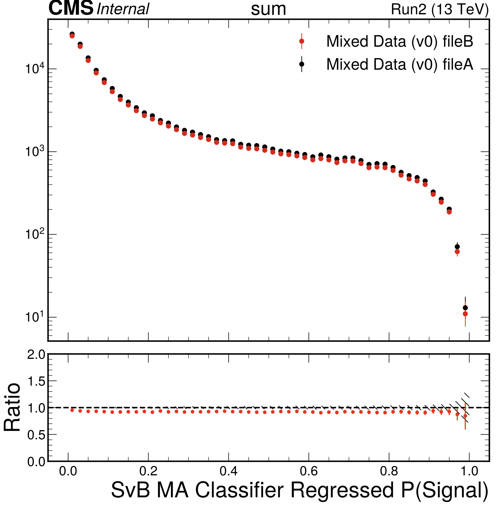
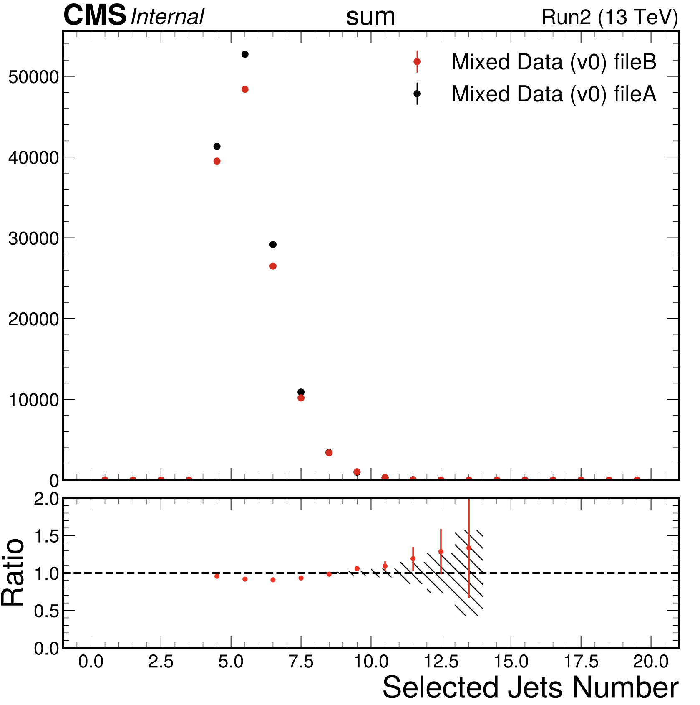
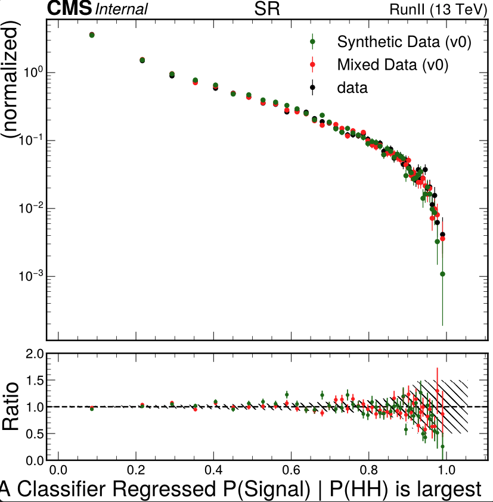

Migrate Hemisphere Mixing To Python
Synthetic-data-sets-via-hemisphere-mixing HemisphereMixing
Notes:
- step 1) create library 4tag -> bunch of kd-trees
- step 2) mix all 3b
- step 3) sub-sample mixed 3b
- Hemi-library / (kd-tree by summary variable)
- Lots of unit tests!!!!
- Make hemi libraries processor that outputs
- Make Mixed data
- skimmer that loops over chunks
- For each chunk: loop on jet selection for each jet selection
- skimmer that loops over chunks
To do
[X]Add CI tests[X]Add HIstograms[X]Write out hemiLibrary[X]Setup kdTrees[X]Build all kdTrees…
[X]Swap Hemis[X]Output events[X]Script to count hemis,[X]Scheme for cutting off number[X]PreCompute mean RMS… output yaml[X]Script to make histograms[X]Function to load kdTrees[X]Figure out rotations[X]update other hemi info[X]Use iterators to simply the for loop[X]Clean and setup CIs[X]output hemi file to EOS[X]Run on condor[X]Add printouts of the number of libraries loaded[ ]Output empty electron and muon collections[ ] Add hemiwieghts for ttbar[X]Script to run on mixed data and make plots.[X]should also output "4b"-like files[X]Check for hemis from the same event…[X]Plot hemi statistics[X]Make mixed datasets…[X]Script to Count number of hemi uses, hemi-pair uses: inclusive, SB, and vSR[X]Add sed changing path to test the hemimixing[X]Run all Run2 years[X]Debug the psedotag assignment… Needs to be selected jets[X]Read in correct metadata according to year[ ]Signal injection[ ]Boostrap scripts
Maybes
[ ] Merge hemiLibrary files? (Probably No)[ ] Merge Meta data ?[ ] Separete Random Access tree ?[ ] Split output files by jet Multiplicity ?
Logs
04 February 2026 Wednesday
- Remaking Run2 mixed data with proper ttbar weight subtraction using FvT.. fails
ERROR The whole dataset is missing: {'data_UL17B'}
- Rerunning
- Problem is w/UL17B I was not running on this before… This might be an issue with teh new trigger
- Re-ran no UL17B … looks OK… nope some files did not merge… rerunning
- Now
data_UL16_preVFPCgiving me problems… rerunning locally - Doesnt really make a differnece: norm is sligthly off

- (would probably be fixed with an updated JCM for subsampling)

- Still should probalby use the 3b DvT from the FvT in the future
08 January 2026 Thursday
- Checking the JCM weights… looks good
- Resplitting subsamples with the new JCM 0… 1 … 2
- Now running with SvB
[X]Make plots mixed vs 4b…[X]Think about mixed CIs
Steps in making the mixed data:
- making the hemis ( Have CI)
- study the hemis (Adding…fix v1.. fix v2 .. fix v3… WORKING.. how to check the yml ? … fix v1… WORKING)
- do the mixing … (Adding…fix v1… WORKING
- do the splitting … (Adding… fix v1… fix v2…
- Analyze the split data … (Adding…
- Making hemistats …
./run_container python coffea4bees/hemisphere_mixing/study_hemispheres.py --hemifiles coffea4bees/skimmer/metadata/hemisphere_library_noTT.yml --year UL18 UL17 UL16 --threshold 1000 - Moving to the skmmer metadata folder
- More CI works
- Added the cut flow CI
- MERGED!!!
- READY TO MOVE ON TO RUN3 … DONE!!!!!

07 January 2026 Wednesday
- checking nJets distribution with new JCM… looks good
- pushing
- cleaning up in a helper function
[X]Adding new pseudoweights to splitter./run_container source coffea4bees/scripts/mixeddata-split-dataset.sh- Running splits 3 and 4
06 January 2026 Tuesday
- Need to subsample based on new JCM
- Setting up new JCM
- Need to run it on the mixed "fourTag" events add one to the number of untagged jets
- Changing the JCM interface to take the nJets not the jets themseleves
24 December 2025 Wednesday
- Fixing CI
23 December 2025 Tuesday
- Adding config for the JCM fitting
- Will use defaults as nominal
[X]Nominal config as example[X]Low Pt config[X]mixing JCM config- Got the code going…
./run_container python coffea4bees/analysis/jcm_tools/make_jcm_weights.py -o output/mixeddata_cluster/jcm_for_subsampling -c passPreSel -r SB --combine_input_files -i output/analysis_testAll_job/hist_TTbkgs.coffea output/analysis_testAll_job/hist_databkgs.coffea output/mixeddata_cluster//study_mixed_datasets_all.coffea --jcm_config coffea4bees/analysis/jcm_tools/metadata/mixeddata_all_config.yml
22 December 2025 Monday
- Check Jet Multiplicities.
[ ]threeTag (No JCM) vs mixedAll (no subsample)[X]fourTag ttbar vs PStag[ ]Subsample vs threeTag JCM- Thinking about jet multiplicities
- Adding fucntionality to plot separate vars from separate processes
- Adding the old jet multiplicities to the pico
- Running the mixing on condor ! … Works nicely 8,467 events/s total (9401182/1110.3234672546387)
- The jet multiplicities are nearly unchanged from the mixing
- To do the subsampleing I think I need to refit the JCM
- Testing JCM
./run_container python coffea4bees/analysis/jcm_tools/make_jcm_weights.py -o output/mixeddata_cluster/jcm_for_subsampling -c passPreSel -r SB --combine_input_files -i output/analysis_testAll_job/hist_TTbkgs.coffea output/analysis_testAll_job/hist_databkgs.coffea
- Adding nJets and nTag jets histograms to study job processor to be able to fit JCM
- Got the JCM working… probbly need to create a config to configure the different JCM fit
18 December 2025 Thursday
[X]Compare weighted njet distribution with subsampled one[X]Check cut flow of subsampled distribution[X]Check weights- The sampled nJets looks like the reweighted one
- Ran All Run2 data…
[X]Compare the w/o ttbar- Found problems with ttbar ! … only getting assinged to mixv0 … Hacked it… not sure if there is a better fix
[X]Check if we have a runner / ping AE
17 December 2025 Wednesday
- adding mixeddataall to datasets yaml
- Running the mixed data study
./run_container source coffea4bees/scripts/mixeddata-study-mixeddataset.sh - Studying the duplicates
python coffea4bees/hemisphere_mixing/study_hemi_pairs.py coffea4bees/hemisphere_mixing/test_mixed_datasets_all.coffea - Splitting the mixed data … Ran v0 - v2
- Running on v0 - v2
- Add split datasets to datasets yaml
./run_container source coffea4bees/scripts/analysis-mixed-new.sh - [>>] Check the JCM
16 December 2025 Tuesday
- Trying to run on EOS hemis… works fine
- Updating how I pass in hemi… using yaml
- I think I should move JCM to the study/splitter code… … No! needed for PS tag jet assignment.
- Testing subtract pseudotag with weight in mixing… all good
- Made hemispheres for all of Run2… on EOS
- Making hemi Statistics for all years
./run_container python coffea4bees/hemisphere_mixing/study_hemispheres.py --hemifiles coffea4bees/skimmer/metadata/hemisphere_library_noTT.yml --year UL18 UL17 UL16 --threshold 1000- Running the mixing on all data, all years… no problems!
15 December 2025 Monday
- Merging and trying to push to barista again… .. MERGED !
- Trying to run with the ttbar subtraction. Seems to be OK
- Trying to output hemifiles to condor… also seems OK
/store/user/jda102/XX4b/mixed_data_noTT/
data_UL18A_UL18B_UL18C_UL18D : Cuts FourTag ---------- ---------- weighted (unit weight) all 3643916.0 3643916.0 passNoiseFilter 3639049.0 3639049.0 passHLT 3375863.0 3375863.0 passJetMult 3325925.0 3325925.0 passFourTag 124579.0 124579.0 pass_ttbar_filter 116621.0 116621.0
12 December 2025 Friday
- Adding 3b subsample correlation counts
python coffea4bees/hemisphere_mixing/study_hemi_pairs.py coffea4bees/hemisphere_mixing/test_mixed_datasets_all.coffea # -m coffea4bees/plots/metadata/plotsAllMixed.yml- Made subsample matrix… can do 16 samples with 4% overlap
- Updating splitter skimmer
- Made v1
- Trying to process
[ ]Better handling of new mixed data names- Trying to run SvB on the mixed data
./run_container source coffea4bees/scripts/analysis-mixed-new.sh - Comparing cutflow
python coffea4bees/analysis/printCutFlow.py -i coffea4bees/hemisphere_mixing/histData.coffea -p data -e UL18A UL18B UL18C UL18Dpython coffea4bees/analysis/printCutFlow.py -i coffea4bees/hemisphere_mixing/histMixedData.coffea -p mixeddata_4b_mix_v1 -e UL18
[X]Do I need to reapply the calibration or the bjet jet regression?- Can I remove ttbar from hemisphere during splitting ???!!!!!!
- I think so!!!!
- Making plots… not bad
| Data | mixed | ratio | |
|---|---|---|---|
| presel | 124579.0 | 172676.0 | 1.3861 |
| Dijet mass | 51916.0 | 62978.0 | 1.2131 |
| SR | 19608.0 | 23067.0 | 1.1764 |
| SB | 32308.0 | 39911.0 | 1.2353 |
| pass SvB | 1569.0 | 1816.0 | 1.1574 |
| fail SvB | 78016.0 | 113344.0 | 1.4528 |
- Testing jet pts when clustering
- In the hemis the jets have been calibrated but the breg has not been applied
11 December 2025 Thursday
- Adding logic to split mixed datasets
10 December 2025 Wednesday
- Trying to run all … now running !!
MiB Swap: 4096.0 total, 1507.9 free, 2588.1 used. 630.8 avail Mem - Finished!
- Checking for duplicate events…
- very small number 1e-4 in total sample.
- Probably not worth removing duplicates here…
[X]Study of reused hemis and hemipairs- Wrote out hemi pair events and and runs in the SB and SR
09 December 2025 Tuesday
- Retrying to run the mixing… failing
08 December 2025 Monday
Same event vetonot Needed- Adding a plot of the distance variable
- checking for duplicate events
- Re-processing all the mixed data … Now failing
03 December 2025 Wednesday
- Fixed output mixed pico names
- Starting HemiSplitter
./run_container source coffea4bees/scripts/mixeddata-split-dataset.sh - Setting up good names for the hemivars
- Need to make a processor … not a skimmer to study the mixed daa
./run_container source coffea4bees/scripts/mixeddata-study-mixeddataset.sh
01 December 2025 Monday
- Adding new thrust phi to output
- Thinking re:plotting script
22 November 2025 Saturday
- thinking re:pseduotag.
- Compute number of n = tag + loose - tag +PS tag
- sort by btagging score and call the top n "tagged" for the purposes of hemimixing
- Checked that the thrusts after mixing are very similar to the thrusts before … should also make a histogram of this
- Bug fixing the number of pseudotags..
- Think I got a version
21 November 2025 Friday
- Running all with no ak.where and only one round of lookup… 5,731 events/s total (3643937/635.801069021225)
- Running all no ak.where and only one round of lookup… 5,640 events/s total (3643937/646.0514125823975)
- Crashed with more than one iteration…
[X]Fix ERROR in CI- added v2 logic to loop on jet bins… output to a list of hemis and then sort at the end
- Runnign all BOO YEAAA … 5,101 events/s total (3643937/714.3310241699219)
[X]Recompute thrust axis after mixing…Looks good- Trying to load kDTree in event loop instead of at init… implemented
- Testing running all… crashed…
- Re ran … 4,813 events/s total (3643937/757.1812090873718)
20 November 2025 Thursday
- Implementing rotations
- Removing muons and elecs from testing
[X]Add hemi matching distances- creating a helper function for the hemi-replacement
- Setting up CIs
- Adding options for studyhemispheres.py total hemisphere = 233498 nHemiLibraries = 77 combined counts 233498 vs total counts 233498
./run_container python coffea4bees/hemisphere_mixing/study_hemispheres.py --hemifiles output/mixeddata_cluster/data_UL18D/hemisphereLib_e850b3fc-05bc-11ee-a472-0ebce183beef_1085436_1184112.root- Reclustering all… 48,980 events/s total (3643937/74.39589524269104)
- Trying to mix all the data and fails with 1 worker and 100,000 chunk size… .works with 10,000 chunk size
[X]Try with fewer hemilibraries- Trying with nHemiLibraries = 46 (threshold 1000) hemisphere libraries … 35 events/s total
- Without the ak.where … 35 events/s
- Now, with only one hemilibrary…. 76 events/s
- With no hemireplacement 76…
- with no splitting into hemis… 83 events/s
- with running all 8,231 events/s
[X]Need to treat the pseudotag jet as a tagged jet- All with just the hemi-creation …. 9,229 events/s total (3643937/394.85244703292847)
- All and no ak.where…?
19 November 2025 Wednesday
- Trying to update hemispheres….
- Try manying things.
- Chat AE…. Chat GPT …
- Temp solution look up all hemis each iteration… only replace with mask using ak.where
- Works in test.
- Added iterators..cleaned the code
- running out of memory with 50 events!… Found that its b/c of the electrons and muons … kill them
- process both hemis in one go…
- Got a solid version running.
- Good ideas on how to update synthetic jets
18 November 2025 Tuesday
- Setting up test to do the mixing…
- Fighting with test vectors… got it working
- Can build the new hemis.
- Now how to output the new events…
- …
17 November 2025 Monday
- Mail CL re:better way to read the hemis
- Got the template script setup
- Think I will look on multiplicity bins
./run_container source coffea4bees/scripts/mixeddata-make-dataset.sh [X]Need to start a test
14 November 2025 Friday
- Moving plots to output directory
- Made yaml with summary statistics
- Made plots of counts
- fighting to read back in the yaml
- …. think I got it.
- Now converting to zscores when loading the hemi-libraries
- Can now load in all the hemis…
- I think I need to clean the code a bit…
Now done - 1st make yaml file.
- Then read it back and make the zscores and the data and the hists
13 November 2025 Thursday
- making script to counts hemispheres
./run_container python coffea4bees/hemisphere_mixing/study_hemispheres.py - Think I need for each var [min, max] eg: nTag = [0, 4] .. if above 4 use the library with nTag == 4 then nSel[nTag=0] = [1, 3], if below 1 use 1, if above 3 use 3 nJet[nTag=0, nSel=1] = [1,5]
- Adding script to count
- Need to add function getHemiLibrary(nTag, nSel, nJet)
- Adding histograms
- Updating pts to do |pt| in the sums
- remaking hemis 57,231 events/s total (3643937/63.670448780059814)
12 November 2025 Wednesday
- Collecting notes
- Fixes from CL
- Cluster all Before: 51,020 events/s total (3643937/71.42242789268494) Now: 48,182 events/s total (3643937/75.62821125984192)
11 November 2025 Tuesday
- Adding event info
- Looking into writting out
./run_container combine root hemisphereLib.root - I think I got the output working… Testing…
- Looks good!
- Testing all… pushed
- Now need to start on the mixer
- Starting to add the kdTrees… have a good defult
- Looking into reading files… starting with uproot
10 November 2025 Monday
- Mail to CL asking re:output files
- Starting
processor_make_hemi_library.pyinmixeddata-cluster.sh ./run_container source coffea4bees/scripts/mixeddata-cluster.sh- Created hemisphere
- Computing hemisphere variables
- Added CI tests
- Adding histograms
./run_container python -i coffea4bees/plots/iPlot.py output/mixeddata_cluster//test_mixed_datasets.coffea -m coffea4bees/plots/metadata/plotsAll.yml
07 November 2025 Friday
- Got thrust running
- Sped up thrustaxis calculation
- Thinking about code structure Two processors Hemilibrarys
06 November 2025 Thursday
- Starting with Thrust axis calculation
./run_container source coffea4bees/scripts/code-jet-clustering.sh- Got some code from chatGPT to calculate thrust axis https://chatgpt.com/share/690cf2e0-cf60-8000-a005-89bf9c8e4b2e
- Starting a test for the thrust axis
./run_container source coffea4bees/scripts/code-hemisphere-mixing.sh